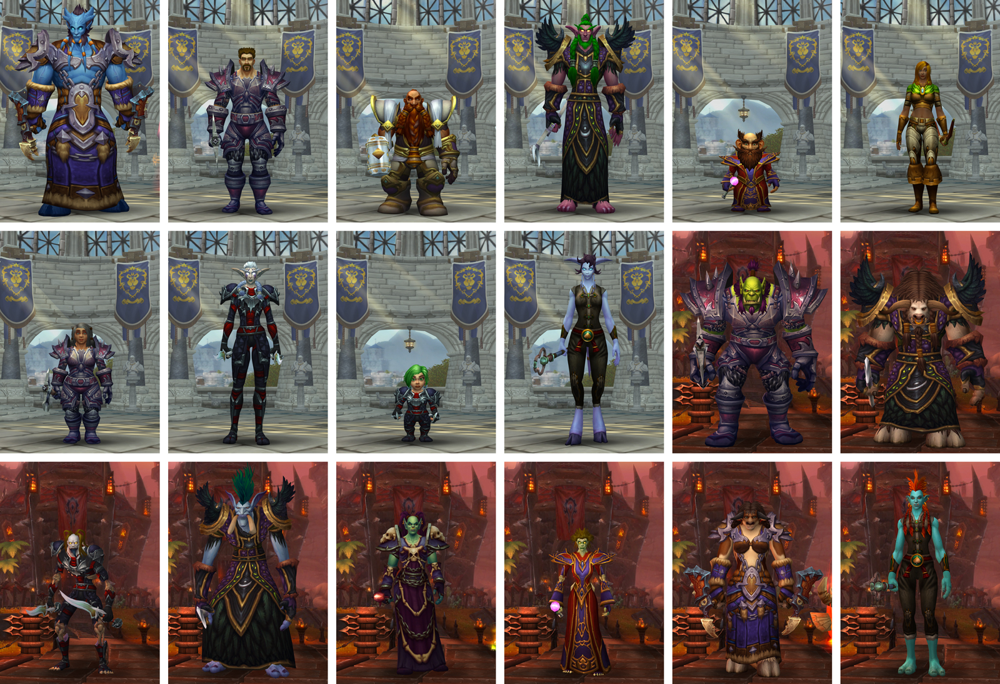

Alianza
-
El reino humano de Ventormenta es la columna vertebral de la Alianza. La voluntad de esta ciudad por colaborar con los demás mediante la diplomacia ha demostrado ser uno de sus puntos fuertes. Sus ciudadanos se rigen por los valores de honor y justicia para defender sus asentamientos y a la propia Alianza contra cualquier amenaza.
- Los audaces y valerosos enanos son una antigua raza descendiente de los terráneos, seres de piedra viva forjados por los titanes cuando el mundo era joven. Proceden de la imponente ciudad de Forjaz, en los picos nevados de Khaz Modan, y son valientes defensores de la Alianza
- Los antiguos y reservados elfos de la noche, también conocidos como kaldorei, han desempeñado un papel fundamental en la forja del destino de Azeroth. En su lucha por la Alianza, muchos elfos de la noche recuerdan los sucesos de la Guerra de los Ancestros que tuvieron lugar hace más de diez mil años cuando detuvieron la primera invasión de la Legión Ardiente sobre Azeroth. Estos feroces elfos lucharán con uñas y dientes para garantizar que sus tierras sagradas nunca vuelven a sufrir la influencia del ma
- Los astutos, valerosos y con frecuencia excéntricos gnomos presentan una paradoja única entre las razas civilizadas de Azeroth. Su admirable optimismo frente a las calamidades simboliza el espíritu inquebrantable de los gnomos, y su creatividad e ingenio ilimitados solo es comparable con su compromiso con la causa de la Alianza
- Tras huir del mundo en ruinas de Terrallende, vestigio destrozado del planeta antes conocido como Draenor, los misteriosos draenei aterrizaron abruptamente en Azeroth, donde juraron lealtad a la Alianza y se comprometieron a destruir a su enemigo acérrimo, la demoníaca Legión Ardiente. Después de la derrota de la Legión, los draenei buscan un nuevo destino al amparo de la bendición de la Luz
Horda
- Los orcos vivían antaño como clanes chamánicos en el exuberante planeta de Draenor. Kiljaeden, un señor demoníaco de la Legión Ardiente, los corrompió e invadieron el mundo de Azeroth. Con el paso del tiempo fueron capaces de liberarse de las influencias demoníacas, se asentaron en Kalimdor y fundaron su capital, Orgrimmar, una ciudad desde donde luchan por encontrar su lugar en el mundo que quisieron conquistar
- La muerte no ofreció escapatoria a las decenas de humanos asesinados durante la campaña del Rey Exánime para acabar con toda forma de vida en Lordaeron. Cuando el control del Rey Exánime sobre sus enormes ejércitos flaqueó durante la Tercera Guerra, un contingente de no-muertos se liberó de la férrea voluntad de su maestro. Se hacen llamar Renegados, y ahora luchan por vivir en un mundo que rechaza su existencia
- Los pacíficos tauren, conocidos en su idioma como los shu'halo, son antiguos moradores de Kalimdor que luchan por preservar el equilibrio de la naturaleza a petición de su diosa, la Madre Tierra. Antaño de naturaleza nómada, las tribus errantes de tauren se han unido y se han establecido en Mulgore, su ancestral tierra natal
- Los orgullosos exiliados Lanza Negra se encontraban al borde de la extinción cuando una violenta tormenta arrastró al jefe de guerra Thrall y a las poderosas fuerzas de la Horda a la lejana isla de los trols. Acogidos en el seno de esta facción, encontraron en ella su lugar junto a otras razas marginadas
- Durante miles de años, los altos elfos de Quel'Thalas han obtenido su fuerza de La Fuente del Sol, un manantial mágico de energías arcanas. Sin embargo, la invasión de los no-muertos de la Plaga diezmó a la población del reino y los privó del poder de La Fuente del Sol. Los habitantes de Quel'Thalas adoptaron el nombre de elfos de sangre —o sin'dorei, en su propia lengua— y saciaron su sed de magia con energías viles demoníacas por un tiempo. Cuando se restauró La Fuente del Sol, reconstruyeron su patria y se sumaron al heroico futuro de la Horda
